October Papers: Fast and Smart Language Models
October was packed with insights into making language models faster and smarter. We reviewed four of our favorite papers for you in detail:
- First up, Grouped Lattice Vector Quantisation introduces a novel technique for a fine-grained post-training quantisation of LLMs, retaining good performance even at low bit widths.
- Planned Diffusion combines autoregressive planning with text diffusion, achieving low-latency text generation.
- Rethinking Thinking addresses the problem of long reasoning chains by distilling intermediate results into a bounded workspace for faster answers.
- Finally, When Structure Doesn’t Help compares techniques for encoding graphs for consumption by LLMs with surprising results.
We hope you enjoy this month's papers as much as we did! If you have thoughts or questions, please reach out to us at @GCResearchTeam.
Learning Grouped Lattice Vector Quantizers for Low-Bit LLM Compression
The key idea
The paper introduces grouped lattice vector quantisation (GLVQ), a weight quantisation technique that splits weight tensors into groups, selects a bit width for each group based on a local importance score, compresses their range using a companding nonlinearity, then splits groups into vectors, before rounding to a lattice. The companding function and lattice basis matrix both are trained with a short run on calibration data. This is illustrated below.
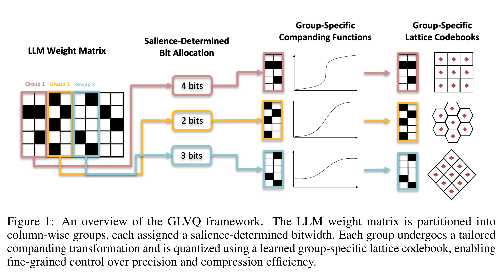
Their method - dequantisation
The dequantisation procedure for a single group of weights starts from low-bit integer indices, reshaped into a matrix multiply (to resolve the point on the lattice) followed by an elementwise nonlinearity (inverse-companding).
I.e. the following pseudocode (using concrete shapes for clarity) for a single vector within a group:
# Given:
# w_indices: int{b}[8] (e.g. int2; b is shared over a group of [4096, 128] weights)
# lattice_G: float[8, 8] (shared over the group)
# mu: float (shared over the group)
# compand_inv: (float, float) -> float
w_tilde = lattice_G @ w_indices
weights = [compand_inv(w, mu) for w in w_tilde]
Their method - quantisation
The quantisation procedure follows four steps:
1. Weight Groups First, divide each weight tensor into large groups (e.g. size \(4096 \times 128\)) - these groups will be quantised independently, sharing quantiser parameters within each group, and trading off flexibility against overhead.
2. Salience-determined bit allocation Based on activations from calibration data, choose bit-widths per weight group to minimise the local objective \(D_{\text{KL}}(\mathrm{Softmax}(W x) \,\|\|\, \mathrm{Softmax}(\hat{W}x))\), where \(W\) is the original weight, quantised to \(\hat{W}\) and \(x\) is a calibration input. E.g. if the average bit width target is 2 bits/param, more sensitive groups might be allocated 3 bits/param, and less sensitive groups 1 bit/param.
3. Companding Since the quantiser in the following step is linear, it is helpful to first compress the range of weights. Use a companding function (elementwise nonlinearity), defined as:
where \(\mu > 0\) is a learned parameter per group. For example, for various \(\mu\) values, the companding function looks like this:
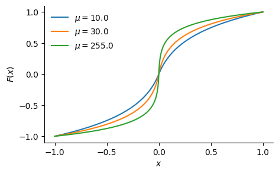
4. Lattice vector quantisation Finally, split each group into vectors (e.g. size 8), and quantise each vector by rounding to the (approximate) nearest point on a learned lattice. The lattice is defined by a basis matrix \(G\) (size \(8 \times 8\) in this example) as \(\\{Gz \| z\in \text{int}\\{b\\}^8\\}\), which is trained using an alternating scheme: first fixing \(G\) and optimising the integer indices using the Babai closest-vector algorithm, then fixing the integer indices and optimising \(G\) with gradient descent.
Putting everything together, the quantisation procedure for a group of weights follows:
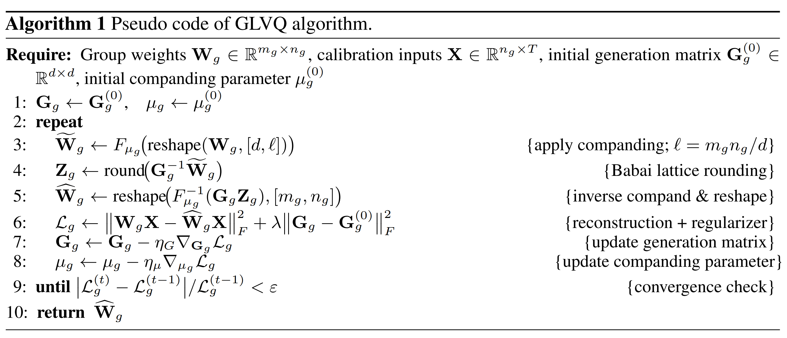
Results
A comparison with other post-training quantisation methods on Llama 2 show competitive results at 2-4 bits/param:
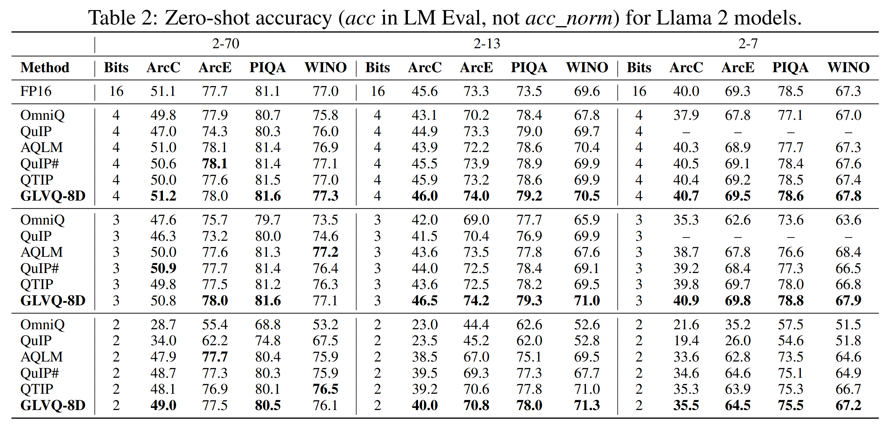
Performance benchmarks also show the memory bandwidth achieved for GLVQ dequantisation before matrix-vector product, as well as overall tok/s benchmarks:
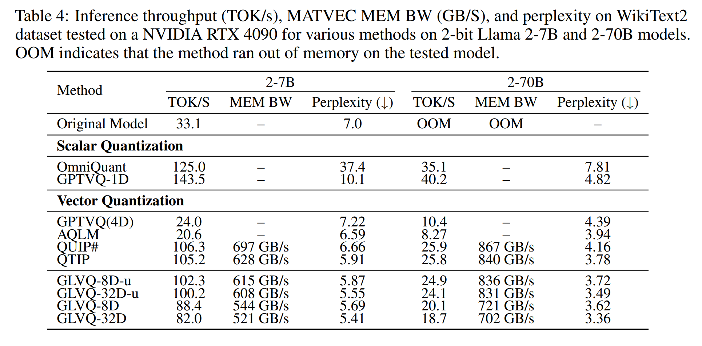
The results are also supported by an ablation of each aspect described in the method section, as well as for more fine-grained design decisions. We omit this here for brevity, although they are a valuable part of the paper.
Takeaways
I really liked this technique and paper — the results seem strong and the performance analysis and ablation are thorough. Like many post-training quantisation papers, which use global calibration data from a forward pass through the model, and local gradient-based optimisation, I would be interested to confirm that this is significantly cheaper than quantisation-aware training, so would like to see PTQ compared against QAT in papers like this.
Planned Diffusion
The key idea
Planned diffusion introduces a hybrid approach combining the strengths of autoregressive and diffusion models. First, the model autoregressively generates a plan, breaking the task into semantically independent spans. Second, the model generates these spans in parallel via discrete diffusion.
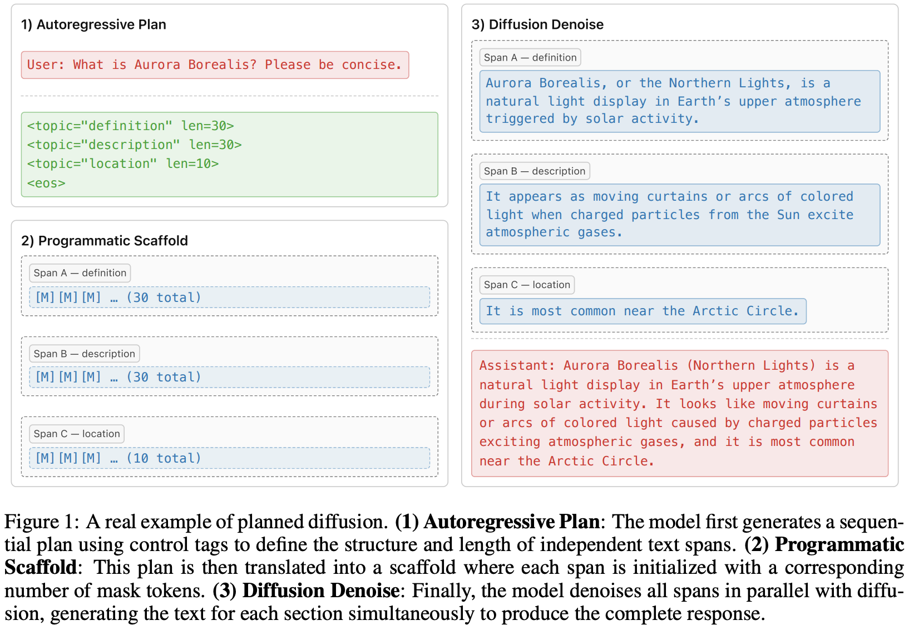
Method
In the first stage, the model sequentially generates a plan \(z = (z_1, z_2, \ldots, z_N)\) given an initial context \(c\) (user prompt or any previously generated tokens). It specifies a set of \(b(z)\) semantically independent spans as well as the length of each span \(l_k(z)\), \(k \in {1, \ldots, b(z)}\). During the diffusion phase, the sequences \(x(k)\) corresponding to each span \(k \in {1, \ldots, b(z)}\) with \(|x(k)| = l_k(z)\) are generated in parallel. The full joint distribution given context \(c\) is defined as
where \(x = \bigcup_{k=1}^{b(z)} x(k)\), and \(p_{AR}\) and \(p_{D}\) denote, respectively, the auto-regressive distribution of the planning stage, respectively the distribution of the discrete diffusion model in the diffusion stage.
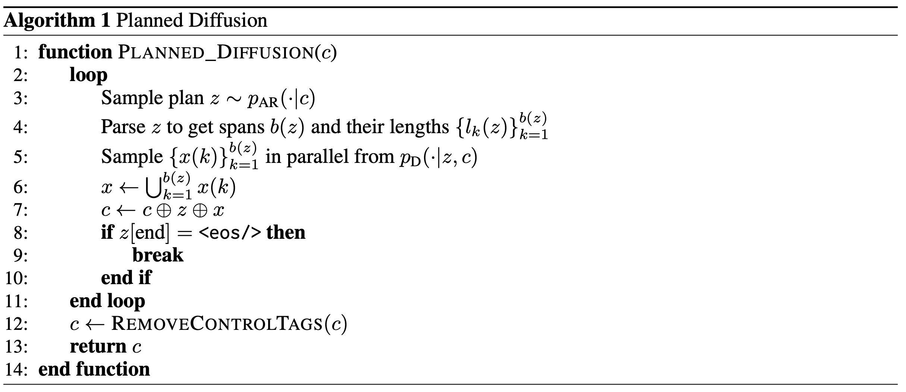
Training and special attention masking
The training loss combines an autoregressive loss and a discrete diffusion loss. More specifically, given a sequence \(Y\) decomposed into sets of planning tokens \(Z\) and content tokens \(X\), such that \(Y = Z \cup X\), and a model \(f_\theta\) parameterized by \(\theta\) with masking function \(M_i\), the overall loss is defined as:
where \(Y_t = X_t \cup Z\) and \(X_t\) denotes the noised sequence under the discrete diffusion process. The first term in the sum corresponds to the autoregressive loss, while the second term corresponds to the diffusion loss.
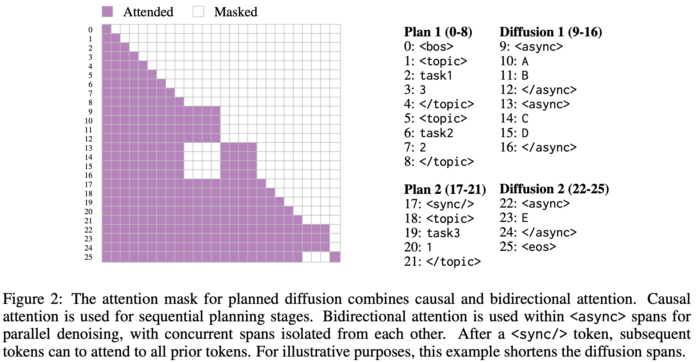
Data
A synthetic data curation pipeline produces training data annotated with planning control tags, using Gemini to label the SlimOrca instruction-finetuning dataset.
Inference
Several techniques are used to improve sampling performance and efficiency: variable-length denoising, where the number of denoising steps depends on the length of the longest span; KV caching; and entropy-ordered unmasking.
Results
The base model is first pre-trained autoregressively and then further pre-trained with a diffusion objective. It is subsequently fine-tuned on the synthetic dataset using four decoding strategies: autoregressive, diffusion, Fast-dLLM, and Planned Diffusion. Planned Diffusion demonstrates promising improvements by establishing a new latency–quality Pareto frontier, achieving up to ~1.8× faster decoding compared to standard autoregressive generation, and continues to improve with additional training, whereas the autoregressive baseline plateaus. However, these gains come at the cost of a small decline in LC win rate, reflecting a minor trade-off in instruction-following quality for reduced latency.
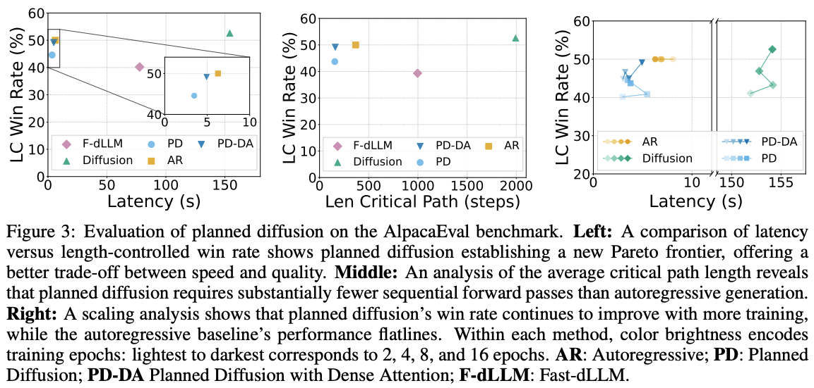
Rethinking Thinking Tokens: LLMs as Improvement Operators
The Key Idea
Training LLMs to reason incentivises them to output their chain of thought (CoT). Amongst other things, this allows them to explore different strategies, and backtrack if needed. The performance gains are undeniable, but they come at a significant cost: their CoTs are typically very long, inflating the context length perhaps an order of magnitude. Not only is this expensive, but, perhaps more importantly, it increases answer latency.
The current paper addresses the inflated context by viewing the thinking process as an improvement operator: it is given a bounded workspace, which it uses to refine its current answer.
Their Parallel-Distill-Refine (PDR) approach, detailed below, permits parallelised access to the workspace, reducing latency issues; they term the non-parallelised version Sequential Refinement (SR).
The authors measure accuracy vs sequential budget, which is a proxy for latency.
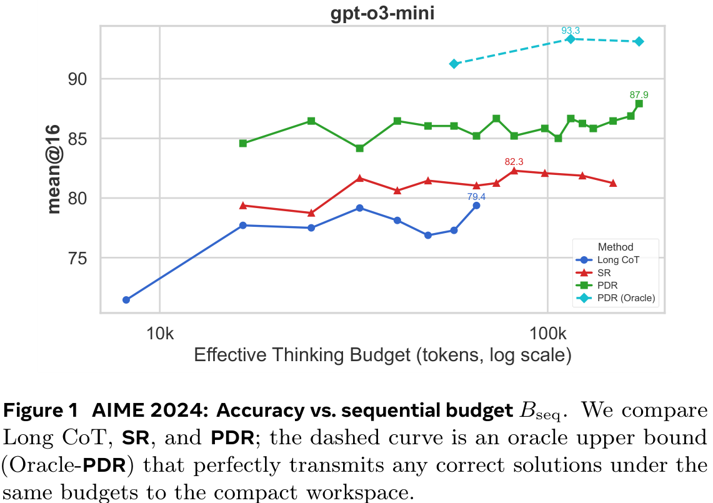
Background
The standard approach to scaling LLMs to solve harder problems is to give them a greater inference budget: they think for longer and longer, exploring different solution strategies. This is highly unsatisfying due to the quadratic scaling of compute with context length. LLMs may even struggle to 'find' the correct information inside their long reasoning traces—if it even exists.
Latent reasoning, in which non-language 'tokens' are used, is often employed to address this: these tokens are supposed to be more 'expressive' than tokens representing natural language, meaning fewer are needed. The current paper takes a very different approach, giving the LLM a bounded workspace to suggest new ideas.
Their Method
The primary tool introduced is Parallel-Distill-Refine (PDR). For multiple rounds, PDR performs the following steps with the output of each round seeding the next:
- Generate \(M \ge 1\) diverse drafts in parallel.
- Distil them into a bounded workspace: e.g., summarise or pick the top-\(k\) drafts.
- Refine answer conditional on this workspace.
The overall structure is outlined in Figure 2(a) below. There are various options for "distil", as outlined in Figure 2(b). If no parallelisation is utilised (i.e., \(M = 1\)), PDR becomes Sequential-Refine (SR).
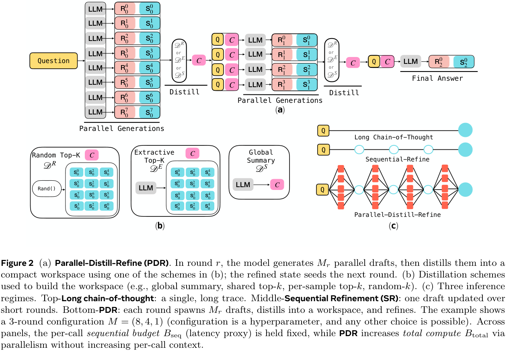
More informally, instead of using long chains of thought, solutions within the allowed budget are generated, and then a bounded, round-wise summary/report is written out. The next phase starts with only this summary (and the question), and uses a new available workspace for fresh generations. Importantly, the workspace is not persistent across rounds, instead resetting. Thus, iterating the process enables long 'thinking', but with a bounded context size.
Importantly, whilst total compute is affected by the number of drafts generated in parallel, latency isn't. Performance results are measured against the sequential thinking budget \(B_\textsf{seq}\) (latency proxy: sum of tokens along accepted path) as well as the total budget \(B_\textsf{total}\) (sum of all tokens).
Results
The main result of the paper is shown in Figure 3 below. It compares the performances at matched sequential thinking budget \(B_\textsf{seq}\). The figure is given first, then key aspects are summarised in a table below.
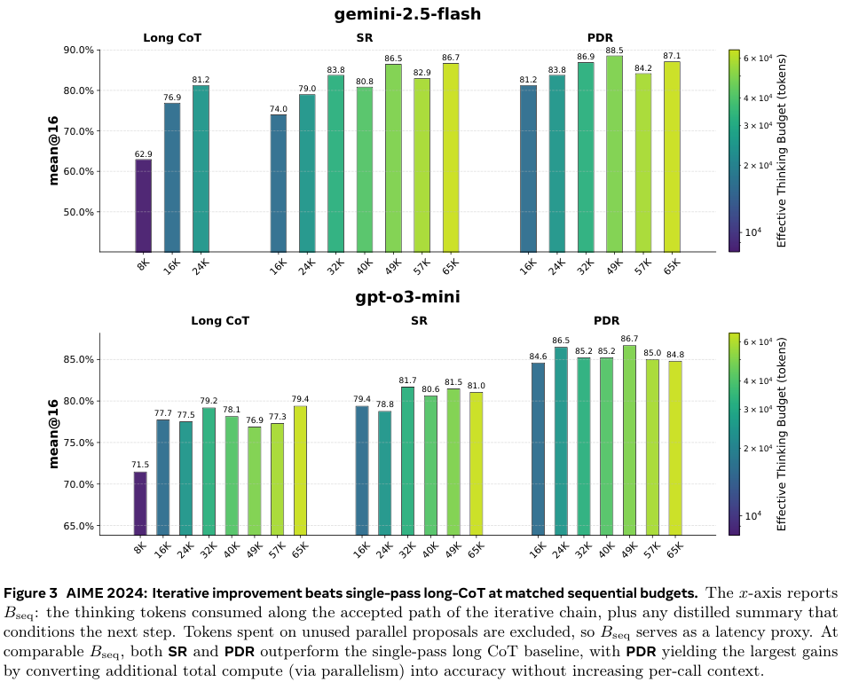
| Model | Budget | CoT | PDR |
|---|---|---|---|
| Gemini 2.5 | 16k | 76.0 | 81.2 (+5.2) |
| 24k | 81.2 | 83.8 (+2.6) | |
| GPT o3 mini | 16k | 77.7 | 84.6 (+6.9) |
| 24k | 77.5 | 86.5 (+9.0) |
Overall, the improvement is more significant on GPT 3 than Gemini 2.5, although Gemini 2.5 starts from a higher baseline. A 9 percentage-point improvement at 24k budget for GPT o3 is impressive, but it should be noted that GPT o3 at 24k actually performs worse than at 16k. In general, there are serious diminishing returns on increasing the sequential budget, even sometimes negative, suggesting noisy samples.
The results on AIME 2025 (Figure 9 in their appendix, not repeated here) show similar trends, albeit arguably with a greater benefit from increasing the sequential budget.
Unfortunately, no particularly satisfactory plots are given using the total budget. Figures 4 and 10 give some indication, but the CoT models are always given far less total budget. This is natural since they have no inherent parallelisation. Still, some information can be gleaned from these.
Other experiments include comparing distillation methods and varying the architecture for a given total budget—e.g., 'deep & narrow' (generate few in parallel and repeat many times) versus 'shallow and wide' (generate many in parallel and repeat few times).
When Structure Doesn’t Help: LLMs Do Not Read Text-Attributed Graphs as Effectively as We Expected
The key idea
The authors take a systematic study into understanding the effectiveness of strategies to encode text-attributed graphs (TAGs) for using in LLMs. To that end, they compare standard approaches to LLM-based graph learning: they provide as input to the LLM a description of the task and the graph structure, encoded using either a GNN, an MLP or a template-based method. See Figure 1 for an illustration of the pipeline.
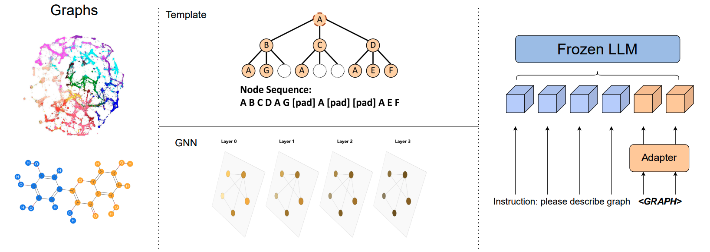
In particular, the following is an example of a prompt used for the task of node classification on the Cora dataset:
Given a node-centered graph: < graph >, each node represents a paper, we need to classify the center node into 7 classes: Case Based, Genetic Algorithms, Neural Networks, Probabilistic Methods, Reinforcement Learning, Rule Learning, Theory, please tell me which class the center node belongs to?
Their method and results
The authors consider the graph-based tasks of node classification, link prediction and molecular property prediction. While node classification and link prediction on TAGs are often assisted by node descriptions, molecular property predictions rely more on the intrinsic graph structure of the molecular graph.
To evaluate these tasks, the authors consider two key LLM-based graph learning techniques: 1. generic graph learning with GNNs using the GraphToken framework, and 2. templated graph learning with LLaGA.
Generic graph learning
The authors use the GraphToken framework as the basis for generic structural encoding via GNNs, which follows the pipeline outlined in Figure 1. They consider several GNN backbones with this framework -- the Graph Convolutional Network (GCN), the Graph Attention Network (GAT), and the Graph Isomorphic Network (GIN) -- and compare them to a simple MLP in lieu of the GNN in this framework. Their results, presented in Table 1, show that for encoding a graph to use in an LLM, the message passing protocols of GNNs do not provide a significant improvement over a simple MLP that only incorporates the graph's node textual descriptions.
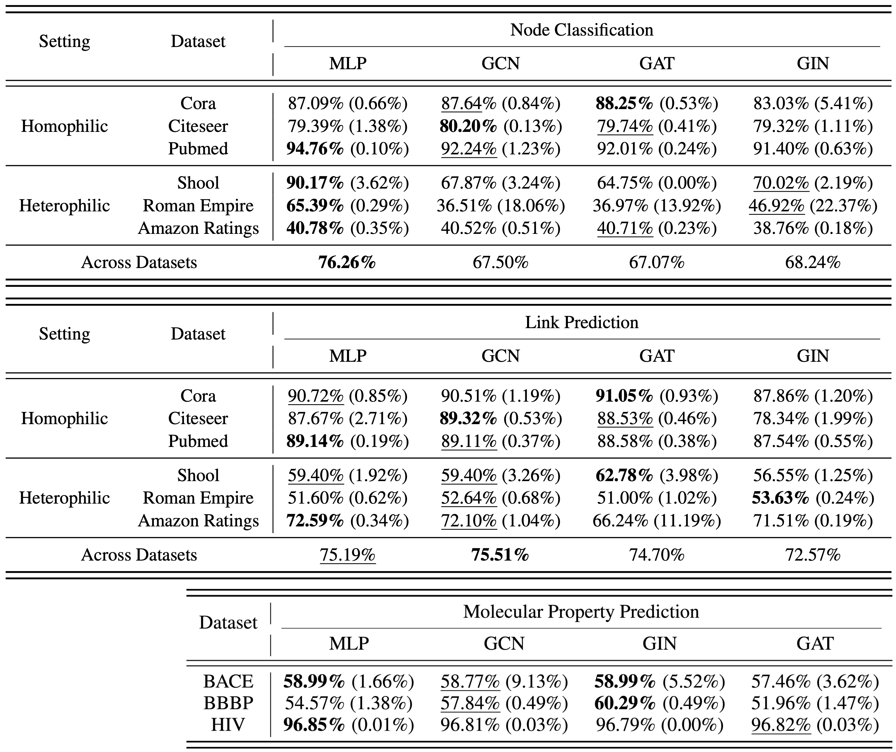
Templated graph learning
The authors use LLaGA's framework as the basis for templated structural encoding via Laplacian positional embeddings, which also follows the pipeline outlined in Figure 1. They compare LLaGA's Neighborhood Detail (ND) template, which captures the local structure of each node as a sequence of nodes (full structural representation), with two different baselines: (a) Hop Neighbor (HN), which is a random subset of k-hop neighbors from each node to form the sequence of nodes (limited structural representation), and (b) Center Only (CO), which only uses the description of each node (no structural representation). Their results, presented in Table 2, show that the carefully curated sequence of nodes of ND underperforms on both node classification and link prediction (note that the results for molecular property prediction are not given).
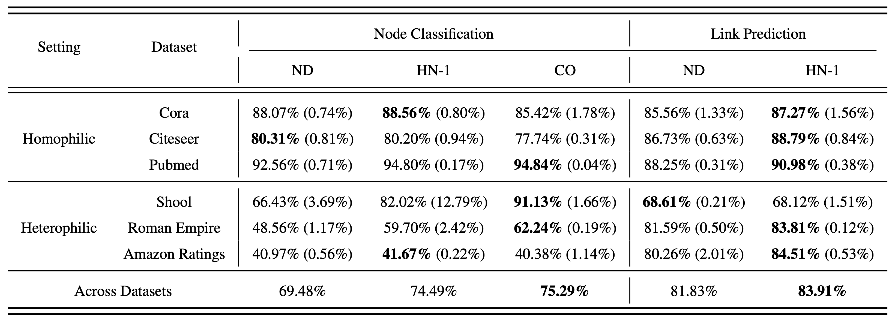
Conclusion
In this blog post, we have reviewed a subset of results presented by the authors (do check out their paper for other results). These results show that for node classification, link prediction, and molecular property prediction, providing an LLM with the encoding of only the node textual descriptions has comparable results (and better in some cases) to providing it with the encoding of the graph structure using known methods. This highlights the already good performance of LLMs for graph learning tasks on TAGs, but raises the question of the effectiveness of current methods for encoding graph structure for LLM-based graph learning.